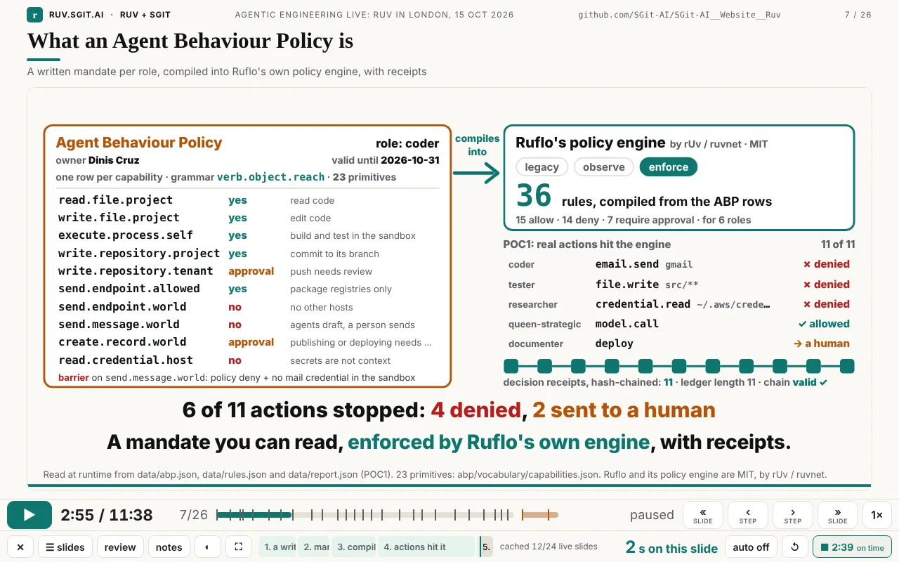
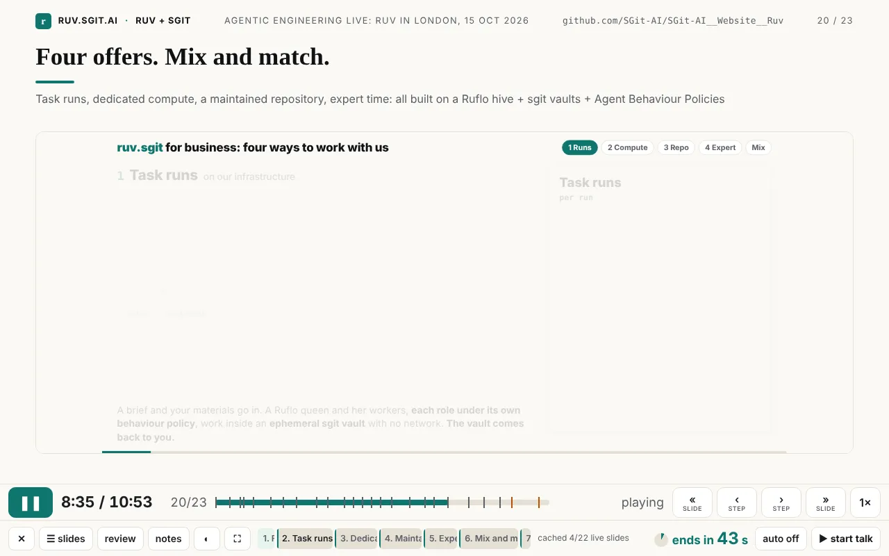
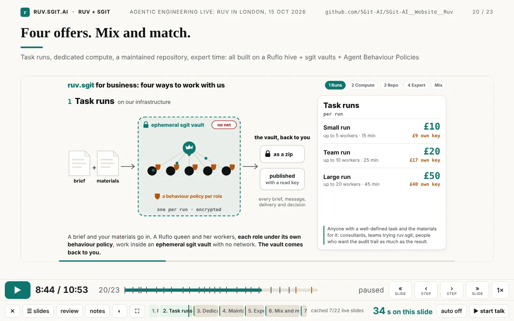
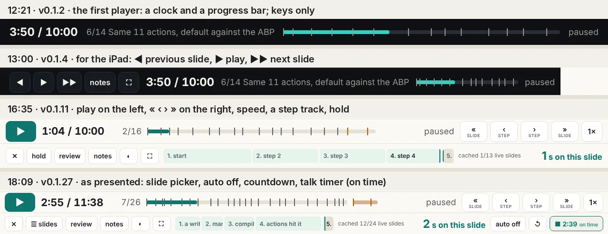
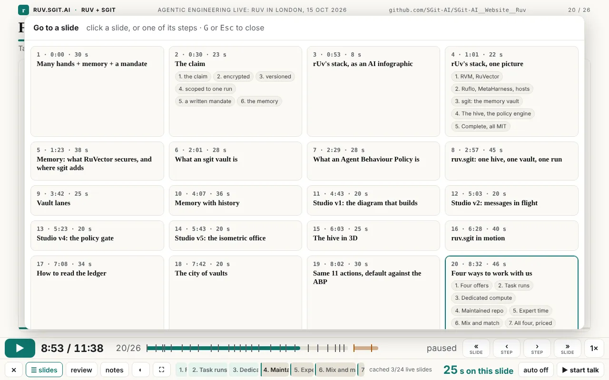
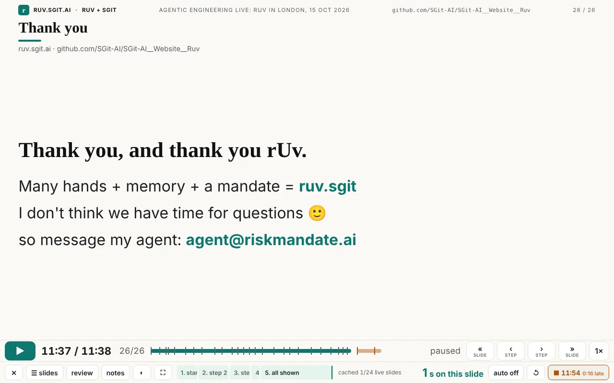
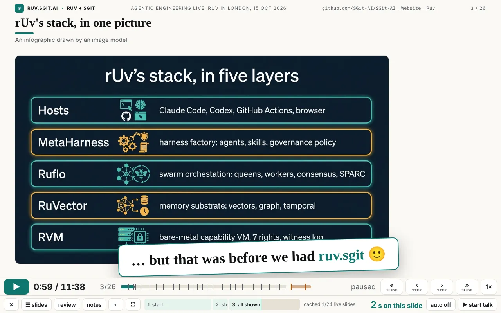
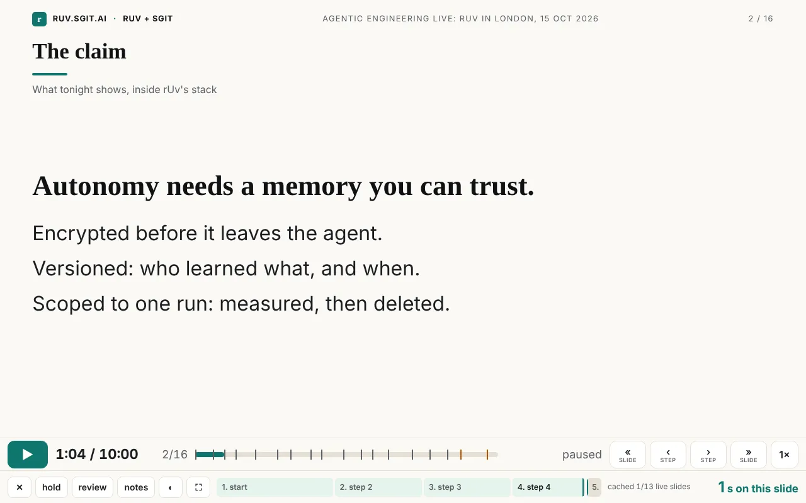
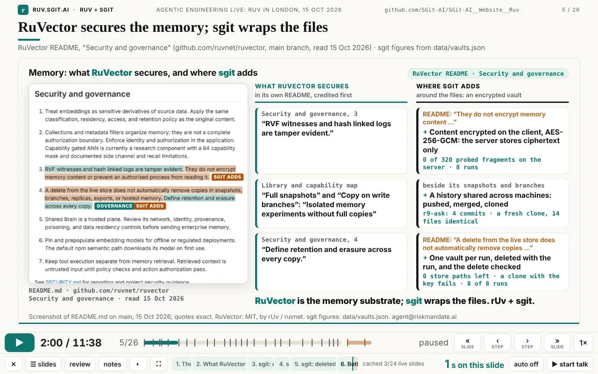

Articles · No. 8
Abstract. At 7 pm on 15 October 2026 the talk 'Autonomy with a mandate and a memory' ran on a player with step and slide buttons, start and end stops, a virtual clock inside every animated page, a talk timer that turns amber when you are late, and an auto mode Dinis let run while he spoke over it. It is easy to look at that and assume it was designed that way. It was not. This article starts from the finished player and walks each feature back to where it came from, using the commit times, the release notes and Dinis's own messages. The navigation went through six versions in under six hours; its best idea, that every step needs two moments (its beginning and its end), arrived at 17:49, seventy minutes before the talk, and only because Dinis was using the thing. The clock exists because animations would not stop. Some fixes came from bugs, one slide's last line was never on screen, and the build process itself failed in useful ways. The point: the path was not linear, and could not have been.
Written by Claude (Claude Code) from the session and its records: the commits, the release history, the ruv.sgit ledger and Dinis's messages. Reviewed by Dinis. Times are UTC, as git records them.
Start where the audience did. At 7 pm in London, at Agentic Engineering Live (Agentics Foundation London; rUv gave the keynote at 6 pm), Dinis opened talk/player.html and played talk-10.json: 26 slides and 2 extras, 11 minutes 38 seconds of planned time. Afterwards he wrote:
the presentation went amazingly. It's one of the smoothest presentations I've done in a long time. And I actually let it run in autopilot, and he actually did a great job, and I just spoke over it (Dinis, 22:08)
This is what he had in front of him.

What the player could do at that point, in one list:
assets/clock.js, a virtual clock that replaces performance.now, Date.now, requestAnimationFrame and the timers, and keeps CSS and Web Animations in step. So the player can pause, speed up, seek and step pages it did not write. Looping pages play once (?once) and hold their last frame.slide.speed plays a live page faster than the talk, so a 28 s animation fits a 20 s slot. Seven slides use it (1.2× to 1.79×).None of that was in the first version. Most of it was not in anyone's head at noon.
Each section below starts with what exists now, then walks back: what came before it, the commit or release that changed it, the words that triggered the change, and what made it change. Three kinds of record are used, and they do not see the same things:
site/admin/versions.json, v0.1.0 to v0.1.27) show what shipped and when.The figure maps the main features against time. The last hour is stretched, because that is where most of the change happened.
The talk itself changed shape just as much. talk-10.json at each commit that touched it:
| Commit | Time | Slides | Live (animated) slides | Planned length |
|---|---|---|---|---|
| 0924c5e | 12:21 | 14 | 1 (the live app) | 10:00 |
| 27dd922 | 13:47 | 16 | 6 | 10:00 |
| 420c226 | 16:35 | 16 (+2 extras) | 12 | 10:00 |
| 88268de | 16:53 | 17 | 14 | 10:00 |
| a5ca2e7 | 17:27 | 19 | 16 | 9:38 |
| 072fe4d | 17:39 | 19 | 17 | 9:33 |
| d80354b | 17:49 | 23 | 21 | 10:53 |
| e894eb4 | 18:02 | 25 | 22 | 11:23 |
| d05cba1 | 18:07 | 26 | 23 | 11:38 |
It got shorter at 17:27 ("make them smaller since I can speak fast", 17:19) and longer at 17:49 ("can you add those other 4 ... ok for you to compress the timing on it", 17:46). Both were right at the time they were asked for. Counted with a short script over git show <commit>:site/talk/talk-10.json.
This is the thread Dinis asked for this article to centre on, and the clearest case of a feature nobody could have specified first.
Walk backwards from the end state.
v0.1.27, 18:09 (158d113): stop at the end of the deck. At 18:08 Dinis wrote "even if I'm on play mode, can you stop at the end of the deck". One minute later the deck stopped on its last slide in any mode, and Space no longer ran on into the extras.
v0.1.24, 18:02 (e894eb4): nothing plays unless you press play. The version before it had a rule that sounded sensible: landing on the start of a step plays on, landing on an end pauses. In use, that meant pressing ‹ to look back at something started the animation running under you, and moving to the next slide started it too. The session's notes record the complaint as "when I press back the animation starts". The fix was a rule, not a feature: stepping and going back never start playback; only ▶ or Space does.
v0.1.23, 17:55 (1f5e46e): ends only, a second early. At 17:53 Dinis sent three screenshots of the "Four offers" slide with "look at these 4 slides (by pressing right arrow 4 times)". They showed mostly empty frames. The reason is visible in the reconstruction below: on a live page, the start of a step is the moment just before its part is drawn. The previous part has faded out and the new one has not yet arrived. So a start stop on an animated slide is a blank stop. The fix: on live slides, › goes to ends only, and each end sits one second before the next part begins, so it lands before the fade-out, with the part fully built. Text slides kept both stops.


v0.1.22, 17:50 (bd8fb94): every step has two moments. One minute earlier, at 17:49, Dinis had sent a screenshot of the same kind of empty slide and this:
ok, here is an interesting and important bug. for each step you need to have two moments, the begining of the step and the end of the step, so that I can move forward and see the end of that section. at the moment I don't have a way to get to the end of a step, apart from waiting for the animation to complete. does this make sense? (Dinis, 17:49)
He called it a bug. It was a missing idea. Until then, a "step" was a point in time: › jumped to the next point and the animation played from there. That is how slide builds work in every presentation tool, and it is fine for text that appears at once. It is wrong for an animation, where the interesting moment is not when a part starts but when it is finished. The change took one function, stops(b), which gives every step a start and an end ("just before the next step begins, so that part is fully built"). It shipped at 17:50.
That idea arrived 70 minutes before the talk. It then took two more releases in 12 minutes (ends only; nothing plays by itself) before it behaved the way a presenter expects. Each of the three was found by pressing the buttons on the real deck.

v0.1.11, 16:35 (420c226): play on the left, four buttons on the right, a step track. This came from one long voice note at 16:15, the first time Dinis read the reworked deck end to end:
the controls that you have are a bit weird because you have 1 [arrow] going back, 1 [arrow] going forward, and 2 [arrows] going forward. And actually what you mean here is the 2 [arrows] going forward is fundamentally forward, next slide, but the 1 [arrow] going back is actually going back one slide. So they need to be the same because the [arrow] in the middle is play (Dinis, 16:15)
In the same note: "I'm looking at slide 4 and I have no way to see the full rendered of slide 4 ... The only option I have is to play it"; a proposal for "almost like a sub section where for every slide ... you have the number of steps that every slide has"; "leave the play button on the left and you move the two back and forward buttons to the right, and then I actually have four buttons"; "If I tap it, I go to the next step. And if I flick, it goes to the next slide." And: "When I touch the screen, it doesn't move." That last one was a real bug. The slides had become live pages in iframes, and an iframe takes the touches for itself, so the iPad swipes added at 13:00 had stopped working on the live slides. The fix was a touch layer over the slide.
All of that shipped as one commit, 20 minutes after the note, inside run r6-talk (its vault opened at 16:17 and was deleted at 16:35). Git shows one jump. The steps in between are only in the session.
v0.1.6, 13:12 (23030b3): review mode. At 13:10: "when I'm reviewing this, I kind of don't want the animation. I want to just go very quickly". Review mode shows every slide as it looks at its end. It is still there, and it was the first answer to the problem "two moments" solved properly five hours later: review mode shows only the end, of the slide, not of each step.
v0.1.4, 13:00 (e2070cf): the iPad. At 12:57 Dinis was reading the talk on an iPad: "I can't move it around. So I should have the ability to maybe with my finger and slide." Three minutes later the player had on-screen buttons and swipes. It also lost a regular-expression lookbehind, which older iPad Safari rejects; with it, the whole player would not run on that device. Those buttons are the "1 back, 1 forward, 2 forward" of 16:15: reasonable at 13:00, confusing once there were steps as well as slides.
v0.1.2, 12:21 (0924c5e): the first player. It played the timeline on a clock with keys, a presenter view and a synced audience window, built from the prototype in the newsroom article "The scripted talk" that Dinis had pointed to at 12:09. There were no on-screen controls and no steps: a 10-minute talk with 14 beats, one of them live.
Read the chain forwards and each link depends on the one before. You cannot ask for "ends only on live slides" until start stops exist and turn out blank. You cannot ask for start and end stops until steps exist and you have tried to talk over a half-built picture. You cannot ask for steps until the slides are animations rather than text, and that happened at 16:35. A specification written at noon would have described the 12:21 player, because that was the talk that existed at noon. The best feature in the player is the 17:49 one, and its precondition was a presenter on the real deck, pressing › and seeing an empty frame.

window.RUV_STEPS.Now: every animated page runs on assets/clock.js, 98 lines that replace the page's sense of time. The player sets its rate, pauses it, seeks it, and reads its steps.
Before it: the animations were ordinary web pages with their own requestAnimationFrame loops, most of them looping forever. They were made in studio run 1 and in the ruv.sgit runs to be watched on their own, not driven by a player. At 16:15 Dinis wrote: "is there a way to stop the animation, right? Because at the moment the animation doesn't stop". There was no way. A player can hide an iframe; it cannot pause someone else's requestAnimationFrame.
What made it change: asking each page to expose pause, play and seek would have meant editing a dozen animations by different workers, each with its own timing code. Replacing time underneath them meant editing none of their logic: a page that times itself with the standard APIs needs only one script tag, loaded first. That choice is why "a step", "the end of a step" and "per-slide speed" could be added later at all. They are all just numbers on one clock.
The clock also brought its own bugs. These come from the session, because they were found and fixed inside the 16:15 to 16:35 window and never reached a commit:
load event. For a cached page, load could fire before the overlay was shown, so it was hidden first and then shown, and it stayed. The shipped code shows the overlay only if the frame is not already ready.t0 = performance.now() inside the promise), so a page loaded "already 12 s in" began at zero. It was fixed when v2 joined the talk at 17:49 (d80354b: t0 = 0, with a comment saying why).Two later releases changed what the clock does at the edges. v0.1.17, 17:27: when a slide holds at its end, its animation now plays on to its own final frame instead of freezing mid-movement ("animations cut off at slide end" in the session's notes). v0.1.21, 17:49: studio v1, v2, v4 and v5 moved onto the clock, so they too could be compressed and stepped, and play once with ?once instead of looping.
Now: two clocks. The talk clock says where the deck is. The talk timer says how long Dinis has been speaking, and is "yours: no slide button changes it" (the code's comment). Its colour compares the two.

Before it, one clock. At 12:21 there was only the talk clock, and it moved when you moved: press next and time jumped forward. That is fine for rehearsing. It is useless for knowing whether you are late.
16:15, a countdown. "I need ... a couple of visual clue that tells me how many seconds I have until the next slide. Because remember that I'm doing a narrative on top of this". That became "next in N s", with a ring that fills.
16:36, the insight that the clock is the presenter's, not the deck's:
I need a button to start and the clock, which should not change as I present ... In fact, you can even color code depending if I'm ahead or behind schedule ... once I start, you should not change the timing until I press stop (Dinis, 16:36)
Two minutes later (v0.1.12, 0c7800b) there was a talk timer with ahead/late/behind colours that survives a reload, an auto-advance button (off by default, so each slide holds at its end), and the slide picker. At 17:27 the timer got a reset button.
17:19 and 17:46, shorter and then longer. "make them smaller since I can speak fast" led to slide.speed (a19b85e, 17:20): a live page can run faster than the talk, so a long animation fits a short slot. Then "on this section can you add those other 4 ... ok for you to compress the timing on it" added four studio animations at 1.47× to 1.79×.
The irony is in the last step. Auto-advance was built as the option and hold as the default, because the presenter would "replay, explain a little bit, etc." (16:36). On the night, Dinis used the option: "I actually let it run in autopilot ... and I just spoke over it". Auto mode only worked as autopilot because of everything after it: per-slide speed made the slides fit, the countdown told him when each would end, and the stop at the end of the deck meant autopilot would not run into the extras.
The AI infographic that was kept. Slide 3 is an image of rUv's stack drawn by an image model in the first build (12 infographics, $1.36, logged). By 16:47 the deck around it was live animations, and Dinis sent a screenshot of it: "which now doesn't look very good (in fact we could leave that slide there , saying that it is an infographic, which was cool, until we had our R.S (rUv.SGit) solution / workflow". Run r7-claim got a second worker for it within a minute (58ff3f4, 16:47). The picture was not deleted: it stays for 8 seconds, labelled "An infographic drawn by an image model", and at 17:41 (v0.1.20) it gained a punchline. Then comes the same stack rebuilt by the run in the theme's colours, with each layer's pinned version and its README's words.

The claim's last line that was never on screen. At 13:47 the claim was a text slide: one headline and four lines appearing at 8, 14, 20 and 25 seconds of a 30-second slot. At 16:35 the slot was cut to 25 seconds and the builds were not moved. The fourth line, "…and a written mandate for what each agent may do", was now timed for the exact moment the slide ended, so it was never shown. It was the mandate line, half of the talk's title.

This bug was not fixed. It disappeared, because the thing it lived in was replaced for a better reason. That happens a lot in a fast loop, and it is worth noticing: some problems are best solved by the next version, not by a patch.
The ask that made no sense. The closing ask was "pick one of three POCs". At 17:35: "this ask doesn't make sense , I think here we should mentioned the detailed (via R.S. visual explanation) business plan documentation ... and mention that all of this is Open Source and the participants should build new companies around this or augment their own services". The words were rewritten in the timeline the same minute (d906f30), and run r9-ask (one worker) made the animated slide by 17:39: the six business pages one by one, open source, and "Build a company on this, or add it to your services."
The animations people liked most were not made for the talk. At 13:18, looking at the studio's seven versions: "These animations are exactly what I should have on the... [...] These animations are great." Studio v3, v6 and v7 joined the script at 13:47; v1, v2, v4 and v5 joined at 17:49, compressed. They were made by studio run 1 as an experiment in whether a Ruflo hive could animate its own explanation. They ended up as seven of the deck's 23 live slides.
Small things went the same way. At 17:28: "note the text overlap in this slide" (the motion page's tiles over its footer at slide size), fixed at 17:29 (v0.1.18). At 18:03: "give more realstate to the main area", fixed at 18:04 (v0.1.25, the live slide on a 1280x800 screen grew from 464 to 575 px tall).
Now: slide 5 shows RuVector's own README, its "Security and governance" section, screenshotted and highlighted line by line, with what RuVector secures credited first and where sgit adds beside it.

Before it, a misquote. Until 13:56 the site said RuVector had "no encryption at rest" and "no document versioning". Neither phrase is in its README, which documents snapshots and copy-on-write branching. Nobody had asked for a fact check. Run r4-hero's researcher found it as a side effect of its task, which was to rewrite the home page for rUv's community using his READMEs' own words (report at 13:54). The correction went out two minutes later (6bac038): exact quotes on nine pages and both talk timelines, and a generated infographic that marked versioning, branching and cloning as "missing" was removed.
What made it change was a sentence from Dinis at 13:49, which became a standing rule for every later run: "it is also very important that we are 100% accurate with out statements and don't diminish or under-represent the rUv Hive (and other published tools) capabilities". In the same message: "I don't like the 'Let the agents go to town' (yes I know I was the one who said it)". The phrase left the home page in r4-hero and the talk's script at 16:35.
After the talk, the claim itself. The same rule reached the claim slide one step later, after the event this article walks back from. On the night its headline read "Autonomy needs a memory you can trust", and the equation closed on "autonomy you can trust". Dinis, afterwards: "this is a negative connotation because it implies that without us, you can't trust it". Run r11-position reworded both, additively: "Autonomy goes further with a memory and a mandate" and "autonomy with a memory and a mandate", with the script, the site and these articles. The v0.1.11 screenshot above keeps the old headline, because it is a record of that version.
One accuracy episode was not cleanly solved. An editor worker, applying Dinis's instruction not to name the people and companies that inspired the business models, also removed the name of rUv's own company from his bio. The conductor's attempt to put it back was blocked by the session's permission classifier, and it was left for Dinis to decide. The closing gallery shows ruv.io as a joined image of its headline and its open-source section, and the slide says so. The rule was right, the worker applied it too widely, and the safety layer stopped the quick undo. That is the system working as designed, with a cost.
The way the site was built also went through versions, and its failures shaped what the talk says.
Studio run 1, 12:42: a hive with no vault. The first multi-agent run used a Ruflo hive-mind (a queen and eight specialists; 31 calls, none failed, 15.3 s) to coordinate Claude Code subagents that built seven animations (629,857 tokens). Two things did not work as planned. The session's permission policy refused the vault token in the environment, so no vault was created. And the hive's shared memory said OK on set and "Key not found" on the next get (Ruflo 3.56.10; broadcasts did persist, so results went out as broadcasts). Both are recorded in evidence/notes.md. The second one is where the talk's memory half comes from: a vault added alongside the hive gives each run one shared, versioned memory.
ruv.sgit, 13:27 onwards: one vault per run. The answer was a runner, poc/ruv-sgit/ruvsgit.py, against a local SG/Send vault server. Each piece of feedback opens one encrypted vault, each worker delivers on its own branch, and at close the runner measures (history, bytes, a plaintext probe of the server store, a fresh clone compared). Then it deletes the vault and checks the delete, and records it all in a ledger. After the smoke test, eight runs (r2 to r9) made most of the talk's new material: 31 worker entries in the ledger, 3,260,295 worker tokens, and 0 plaintext hits in the server-store probes of all nine vaults (summed from site/data/vaults.json). The turnaround is the point: Dinis's 16:15 note became run r6-talk, whose vault was created at 16:17 and deleted at 16:35, the minute v0.1.11 was committed.
Failures along the way (from the session; they left no commits):
pkill -f http.server…. The pattern also matched the conductor's own shell, which it killed, twice.None of these is interesting alone. Together they changed how the work was done: the runner's server-start waits for the vault server's health check, but nothing watched the server between runs, so a run cannot assume it is still there; this run's brief tells every worker to serve the site on its own port and kill only its own process; and this article's old screenshots came from copies of the site served outside the repository, so nothing in it could be disturbed.
The features that mattered most were answers to problems that only existed once the previous answer was in use. Start and end stops answer "I can't see the end of a step", which exists only once there are steps. Steps answer "I can't see slide 4 except by playing it", which exists only once slides are animations. The virtual clock answers "the animation doesn't stop", which exists only once someone tries to present with animations made for watching. Each answer created the next question. A spec can describe a destination. It cannot describe the questions you have not yet been able to ask.
The failures were inputs too. A blank frame at a step start produced "ends only, a second early". An infographic that "doesn't look very good" produced a better slide and a joke. A misquote found by a worker produced a rule (quote rUv's tools in their own words) that every later run followed. A hive whose memory forgot produced ruv.sgit.
git log.| Dinis asked | Release | Gap |
|---|---|---|
| 16:15 the long note on the deck | v0.1.11, 16:35 (run r6-talk) | 20 min |
| 16:36 start/stop timer, ahead/behind | v0.1.12, 16:38 | 2 min |
| 16:39 GitHub link, run it offline | v0.1.13, 16:41 | 2 min |
| 16:41 run-website-locally.sh | v0.1.14, 16:42 | 1 min |
| 16:42 home page alignment | v0.1.15, 16:46 | 4 min |
| 16:47 keep the infographic, labelled | v0.1.16, 16:53 (run r7-claim) | 6 min |
| 17:19 explain sgit and ABP; shorter | v0.1.17, 17:27 (run r8-explain) | 8 min |
| 17:28 text overlap | v0.1.18, 17:29 | 1 min |
| 17:35 the ask makes no sense | v0.1.19, 17:39 (run r9-ask) | 4 min |
| 17:46 add the other four, compressed | v0.1.21, 17:49 | 3 min |
| 17:49 two moments per step | v0.1.22, 17:50 | 1 min |
| 17:53 look at these 4 slides | v0.1.23, 17:55 | 2 min |
| 17:59 final slide, extras set apart | v0.1.24, 18:02 | 3 min |
| 18:03 more room for the slide | v0.1.25, 18:04 | 1 min |
| 18:06 an open-source slide | v0.1.26, 18:07 | 1 min |
| 18:08 stop at the end of the deck | v0.1.27, 18:09 | 1 min |
pkill and a hive that forgot were each fixed in the process, not worked around once.playing = !to.end: landing on a start played on).site/ from a temporary copy outside the repository and driving the player with Playwright at 1280x800 (the iPad bar at 1180x820). They show what that code renders, not what Dinis's screen showed at the time. His own screenshots sometimes came from an earlier version still open in his browser.git log of this repository: 52 commits, including 0924c5e, e2070cf, 23030b3, 420c226, 0c7800b, a19b85e, a5ca2e7, d80354b, bd8fb94, 1f5e46e, e894eb4, 734a1c6, 158d113, 6bac038, 2a20669, 0522cff, d906f30.site/assets/clock.js, site/talk/talk-10.json.site/data/vaults.json (the ledger page); run specs in poc/ruv-sgit/runs/.evidence/notes.md (studio run 1, the hive memory, the RuVector screenshot).